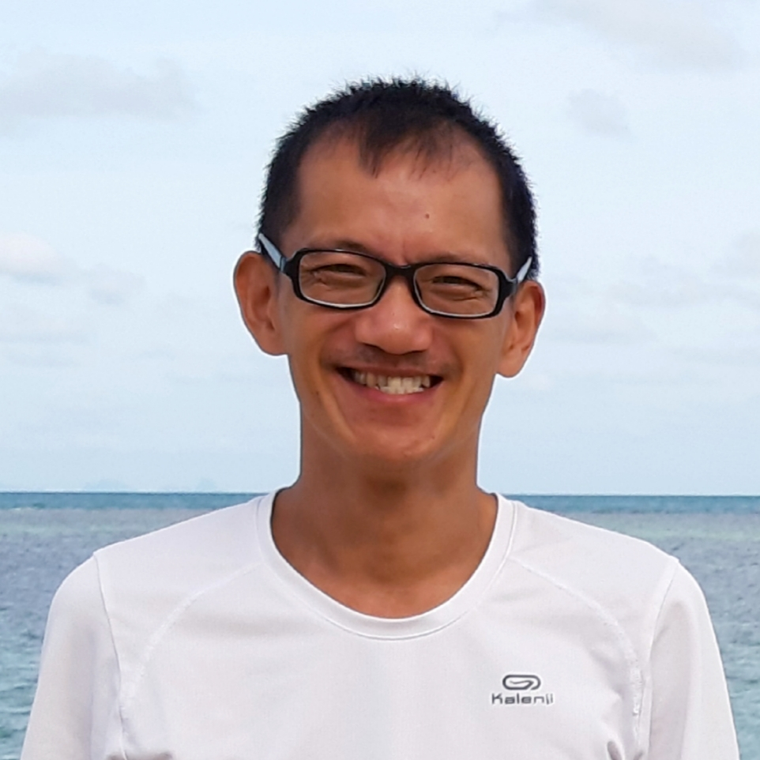

Samyak Yoga (RYS-200), Mysore (India)
Yoga Teacher Training - Hatha yoga 200 hours
Personal data resume
Name
René Coniah SMIT
Address
xxxxstraat X
682x XX ARNHEM
the Netherlands
682x XX ARNHEM
the Netherlands
Phone number
0031(0)6 3914 xxxx
E-mail
Nationality
Dutch
Birth date
23rd of august 1977
Gender
Male
Drivers licence
B

Education
2016
1997 - 2001
Larenstein Velp (the Netherlands)
Foodtechnology (quality management)
(BSc, ISCED 5)
Foodtechnology (quality management)
(BSc, ISCED 5)
1989-1996
RSG Ter Apel
Pre-university education
Pre-university education
Employement
zomer 2020, 2021
Vacansoleil, Camping De Schatberg, Sevenum (L.), The Netherlands
Camping host
Camping host
- Cleaning and preparing accomodations
- Checkin-/check out
- Assisting and replacing the supervisor
summer 2014, 2016, 2019
Camping Village Fabulous (EC Vacanze), Rome, Italy
Staffmember Info-point
Staffmember Info-point
- Providing information about the campsite and Rome
- Selling tickets and excursions
- Finding information and assisting guests in unforeseen situations (stolen documents, need of medical accessories etc.)
winter 2017, 2018, 2019
YepYoga
Free lance yoga teacher
Free lance yoga teacher
- Teaching (private) hatha yoga lessen in ho(s)tels in Asia
summer 2016, 2017
Vacansoleil, Camping Village Fabulous, Rome, Italië
Camping host
Camping host
- Checking accomodations
- Checkin-/check out
- Assisting and replacing the supervisor
2006 - 2011, 2015
Disneyland Paris, France
Waiter in Restaurant Inventions, Disneyland Hotel (5*)
Waiter in Park Side Dinner,Hotel New York (4*)
Waiter in Restaurant Inventions, Disneyland Hotel (5*)
Waiter in Park Side Dinner,Hotel New York (4*)
- One of the circa 60 employees (out of 13.000) who has been most cited as "outstanding castmember" by the guests in 2009, 2010, 2011 and 2015
summer 2012, 2013
Selectcamp
Courier at Camping Ca'Savio, Cavallino-Treporti (VE), Italy
Courier at Prà delle Torri, Caorle (VE), Italy
Courier at Camping Ca'Savio, Cavallino-Treporti (VE), Italy
Courier at Prà delle Torri, Caorle (VE), Italy
- Being the central point for the guest in name of Selectcamp
- Cleaning and preparing the mobilehomes and lodgetents before and at the end of the season and at arrival of the new guests
2004 - 2006
Various companies in the Netherlands
Temporary employee in the hospitality business, especially for banqueting and partycatering
Temporary employee in the hospitality business, especially for banqueting and partycatering
2013
Hotel Papendal (Arnhem)
Waiter restaurant, bar, banqueting
Waiter restaurant, bar, banqueting
2001-2004
Koffiebranderij Peeze
Quality management, Environment, Safety and Health, hygiene and HACCP in a coffee roasting company (comparabile with Illy)
Quality management, Environment, Safety and Health, hygiene and HACCP in a coffee roasting company (comparabile with Illy)
Languages
- Dutch (mothertongue)
- English (B2/C1)
- French (B1/B2)
- Italian (B1/B2)
- German (A2/B1)
- Spanish (A1/A2)
Other skills and information
- Team spirit and welcoming
- Working and interaction with children
- Organisational skills
- Windows, Office, Photoshop, SPSS, VBScript/ASP, HTML
Curriculum Vitae
Naam
Smit
Voornamen
René Coniah
Geslacht
M
Adres
xxxxstraat X
682x XX ARNHEM
Pays Bas
+31 (0)6 3914 xxx
682x XX ARNHEM
Pays Bas
+31 (0)6 3914 xxx
E-mail
Burgelijke staat
Ongehuwd
Geboortedatum
23 augustus 1977
Geboorteplaats
Taipei (Taiwan)
Nationaliteit
Nederlandse
Rijbewijs
B
Opleiding
2016
Samyak Yoga (RYS-200), Mysore (India)
Yoga Teacher Training - Hatha yoga 200 hours
Yoga Teacher Training - Hatha yoga 200 hours
1997-2001
Larenstein Velp
Agroproductkunde (thans Voedingsmiddelentechnologie)
(Ing./ BSc., ISCED 5)
Agroproductkunde (thans Voedingsmiddelentechnologie)
(Ing./ BSc., ISCED 5)
1989-1996
RSG Ter Apel
VWO
VWO
Werkervaring
zomer 2020, 2021
Vacansoleil, Camping De Schatberg, Sevenum (L.), Nederland
Camping host
Camping host
- Schoonmaken en prepareren van accomodaties
- Checkin-/check out
- Assisteren en vervangen van supervisor
zomer 2014, 2016, 2019
Camping Village Fabulous (EC Vacanze), Rome, Italië
Medewerker info-point
Medewerker info-point
- Informatie geven over de camping en Rome
- Verkoop van tickets en excursies
- Informatie zoeken en assisteren bij onvoorziene omstandigheden (gestolen documenten, medische accessoires etc.)
winter 2017, 2018, 2019
YepYoga
Free lance yoga leraar
Free lance yoga leraar
- Het geven van (privé) hatha yoga lessen in ho(s)tels in Azie
zomer 2016, 2017
Vacansoleil, Camping Village Fabulous, Rome, Italië
Camping host
Camping host
- Controleren accomodaties
- Checkin-/check out
- Assisteren en vervangen van supervisor
2006 - 2011, 2015
Disneyland Paris
Kelner in Inventions, Disneyland Hotel (5*)
Kelner in Park Side Dinner,Hotel New York(4*)
Kelner in Inventions, Disneyland Hotel (5*)
Kelner in Park Side Dinner,Hotel New York(4*)
- Eén van de circa 60 medewerkers (van de 13.000) die het meest is genoemd door de gasten als "uitzonderlijke castmember" in 2009 en 2010, 2011 en 2015
zomer 2012, 2013
Selectcamp
Courier op Camping Ca'Savio, Cavallino-Treporti (VE), Italië
Courier op Prà delle Torri, Caorle (VE), Italië
Courier op Camping Ca'Savio, Cavallino-Treporti (VE), Italië
Courier op Prà delle Torri, Caorle (VE), Italië
- Centraal aanspreekpunt voor de gasten waarbij service en kwaliteit voorop staat
- Schoonmaken en gereedmaken van de accommodaties voor en na het seizoen en bij gastenwisseling
2013
Hotel Papendal (Arnhem)
Kelner restaurant, bar, banqueting
Kelner restaurant, bar, banqueting
2004- 2006
JMW Horeca-uitzendbureau (interimair)
Kelner, met name banqueting en partycatering
Kelner, met name banqueting en partycatering
2001-2004
Koffiebranderij G. Peeze B.V. Arnhem
Alle voorkomende werkzaamheden op het gebied van kwaliteitsmanagement, arbeidsomstandigheden, milieubeheer, HACCP, duurzaamheid en marketing
Alle voorkomende werkzaamheden op het gebied van kwaliteitsmanagement, arbeidsomstandigheden, milieubeheer, HACCP, duurzaamheid en marketing
Talenkennis
- Nederlands (moedertaal)
- Engels (B2/C1)
- Frans (B1/B2)
- Italiaans (B1/B2)
- Duits (A2/B1)
- Spaans (A1/A2)
Overige vaardigheden
- Teamspirit, gastvrij
- Organisatorische capaciteiten
- Interactief met kinderen
- Windows, Office, Photoshop, SPSS, VBScript/ASP, HTML
Informazioni personali
Nome / Cognome
René Coniah SMIT
Indirizzo
xxxxstraat X
682x XX ARNHEM
Paessi Bassi
682x XX ARNHEM
Paessi Bassi
Telefono
0031(0)6 3914 xxxx
E-mail
Cittadinanza
Olandese
Data di nascita
23 agosto 1977
Sesso
Maschile
Patente
B
Istruzione e formazione
2016
Samyak Yoga (RYS-200), Mysore (India)
Yoga Teacher Training - Hatha yoga 200 hours
Yoga Teacher Training - Hatha yoga 200 hours
1997 - 2001
Larenstein (Hogeschool), Velp (Paesi Bassi)
Tecnologia degli alimenti (Management della qualità)
(llivello bachelor, ISCED 5)
Tecnologia degli alimenti (Management della qualità)
(llivello bachelor, ISCED 5)
1989-1996
RSG Ter Apel
Liceo scientifico
Liceo scientifico
Esperienza professionale
Lingue
- Olandese (madrelingua)
- Inglese (B2/C1)
- Francese (B1/B2)
- Italiano (B1/B2)
- Tedesco (A2/B1)
- Spagnolo / Castigliano (A1/A2)
Capacità e competenze
- Spirito di sqaudra, animato, accogliente
- Capacità di interagire con i bambini
- Capacità e competenze organizzative
- Windows, Office, Photoshop, SPSS, VBSCRIPT/ASP, HTML
Curriculum Vitae
Nom
Smit
Prénoms
René Coniah
Sexe
homme
Adresse
xxxxstraat X
682x XX ARNHEM
Pays Bas
+31 (0)6 3914 xxx
682x XX ARNHEM
Pays Bas
+31 (0)6 3914 xxx
Adresse email
Etat civil
Célibataire
La date de naissance
23 Août 1977
lieu de naissance
Taipei (Taiwan)
Nationalité
Néerlandais
Permis de conduire
B
Formation
2016
Samyak Yoga (RYS-200), Mysore (India)
Yoga Teacher Training - Hatha yoga 200 hours
Yoga Teacher Training - Hatha yoga 200 hours
1997-2001
Larenstein Velp
Etude agro-alimentaire - management de qualité
(BTS, Licence, Bac+4)
Etude agro-alimentaire - management de qualité
(BTS, Licence, Bac+4)
1989-1996
RSG Ter Apel
VWO (Lycée)
VWO (Lycée)
Expériences professionnelles
Connaissance linguistiques
- Néerlandais (langue maternelle)
- Anglais (B2/C1)
- Français(B1/B2)
- Italien (B1/B2)
- Allemand (A2/B1)
- Espagnol (A1/A2)
Divers
- L'esprit d'equipe et d'acceuil
- Fort en interaction avec les enfants
- Capacité d'organisation
- Windows, Office, Photoshop, SPSS, VBSCRIPT/ASP, HTML
- Lecture, course à pied, jouer du piano